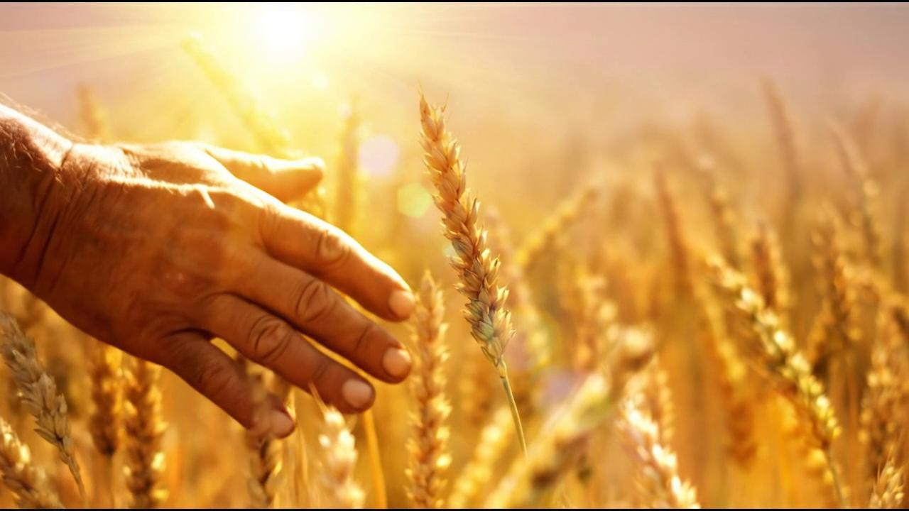

How to Choose a Reliable Eco Tableware Manufacturer
Demand for eco-friendly dinnerware keeps growing — and so does the number of suppliers calling themselves an "eco tableware manufacturer". Most are genuine; a few are trading companies with a polished website and no factory behind it. If you are importing rice husk tableware, plant fiber tableware or any reusable eco dinnerware at wholesale volume, the difference shows up late: in inconsistent quality, missed certifications and stalled custom projects. This guide is the six-point checklist we would use ourselves — written from the factory side of the table, not the marketing side.

Everything starts with the raw material — rice husk, an agricultural byproduct turned into durable plant-fiber tableware.
1. Verify you are talking to a real manufacturer, not a reseller
The first filter is the simplest one. A real rice husk tableware manufacturer can show you its production floor on video or during a live walkthrough, explain its molding process step by step, and tell you its monthly capacity without checking with someone else. Ask three questions: Do you own or operate the factory? Can you show me the production line running? Who controls the raw material blend? A factory that controls its own material ratio can adjust hardness, color and finish for your order. A reseller can only forward your email. Working direct with a factory also means one layer less in your cost structure — which matters when you are buying wholesale eco tableware by the container.
2. Ask for the food-safety certificates — by name, not by slogan
"Food grade" on a website costs nothing. A certificate does. Before placing a bulk order, ask the supplier to send its actual test reports and certifications: SGS testing, LFGB, REACH, food-contact safety reports, ISO 14001 for environmental management, and migration testing for the specific material. A trustworthy eco tableware manufacturer answers this request in hours, not weeks, because the documents already exist in a folder. If the answers are vague — "yes, we have all certificates" with nothing attached — treat it as a red flag. Our own reports, from SGS food-contact testing to ISO 14001, are listed on the factory & certifications page, and we send the full set with every quotation.
3. Confirm real OEM/ODM capability if you want your own brand
Most B2B buyers importing eco dinnerware are building a private label, so OEM/ODM tableware capability is where suppliers differentiate fast. Concretely, ask: Can you mold my logo onto the product? Can you match custom colors? Can you print my packaging? What is the customization minimum? A capable manufacturer answers with specifics — logo molding, Pantone-matched colors, custom retail boxes, and a clear MOQ split between stock items and custom production. Our custom-color colored chopping boards and logo-ready rice husk rice bowls are two examples of that flexibility: stock items ship from small quantities, while fully customized runs (logo, color, packaging) start at accessible MOQs.
4. Check MOQ structure and wholesale pricing honesty
A reliable supplier makes your first order easy and your tenth order predictable. Look for a two-tier structure: stock products at low minimums so you can pilot the market without heavy commitment, and custom production at clearly stated MOQs with per-unit pricing that holds as you scale. Ask what is included in the quoted price — packaging, printing, export documents — and what triggers extra cost. The suppliers worth keeping are the ones whose quotation you can read without calling them. And when the price looks too good compared with everyone else, it usually means a thinner wall, a cheaper binder, or a material ratio quietly changed — which is exactly how "eco" products end up failing in a customer's dishwasher.
5. Demand material transparency — an honest spec sheet beats a perfect brochure
Plant fiber tableware is a blend, and the ratio matters. Our products are made from ground rice husk — a natural agricultural byproduct — plus a small amount of food-grade starch binder, molded under heat and pressure. That is the honest version, and any manufacturer should be able to state its blend the same way. Be cautious with suppliers who dodge the question, or who make disposal claims that sound too strong — specific degradation timelines with no test data behind them, or disposal promises without a certificate to show. If you want to understand what the material actually is and how it behaves, our complete rice husk tableware buyer's guide and the honest answer on biodegradability cover it in depth. Reputable eco-friendly dinnerware suppliers respect precise language, because they know you will be repeating these claims to your own customers.
6. Weight their export experience and communication speed
The last checkpoint is invisible until something goes wrong. A manufacturer that ships to 40+ countries already knows the documents your customs office will ask for, the packing that survives a long ocean leg, and the difference between regions — because it has solved all of that for other buyers. Test communication before you commit: send a detailed inquiry and see how fast the answers arrive, whether they answer the actual question, and whether samples ship when promised. Sourcing is a long relationship; the first two weeks of emails are a surprisingly accurate preview of the next two years.
See the Factory Before You Choose
A factory tour in ninety seconds — from plant fiber to finished dinnerware. This is what "manufacturer" should mean:
Sourcing eco tableware for your brand?
Tell us your target products, quantities and market — we'll reply with a tailored quotation, the full certificate set, and samples from our 5,000 m² facility.
Send InquiryPublished by Kaixin Eco Team · Shenyang Kaixin Technology Co., Ltd. — eco-friendly rice husk (plant fiber) dinnerware manufacturer since 2016, shipping to 40+ countries with full OEM/ODM support. New to the material? Start with our complete buyer's guide, or see why buyers are switching in 5 reasons food businesses are choosing rice husk tableware.